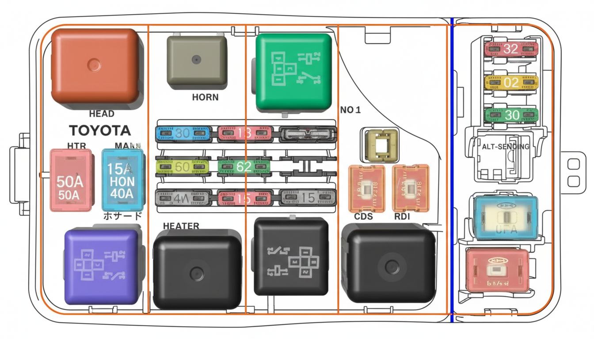

ESXIOR ENGINE ROOM FUSE BOX - QUICK VIEW

HEAD RELAY
大燈主繼電器
HTR 50A
暖氣/冷氣鼓風機
MAIN 15A
引擎主電源 (EFI/ALT)
AM1 RELAY
點火電源繼電器
HORN RELAY
喇叭繼電器
SPARE 30A
備用保險絲 (綠)
ABS 60A
防鎖死煞車系統
AM2 30A
點火/啟動系統 (綠)
HEATER RELAY
暖氣繼電器
FAN RELAY
水箱散熱風扇繼電器
EFI 15A
燃油噴射系統
CDS 30A
冷凝器風扇保險絲
ALT 100A
發電機總保險絲
FAN NO.2 RELAY
風扇切換繼電器
CDS 20A
冷凝風扇分流
RDI 20A
水箱風扇分路
ST RELAY
啟動馬達繼電器
DOME 10A
室內燈/時鐘/記憶電源
HAZARD 15A
警告燈/方向燈
STOP 20A
煞車燈系統
ALT-S 7.5A
發電機電壓偵測
ALT MAIN
發電機總路
MAIN FUSE
全車總保險絲